-
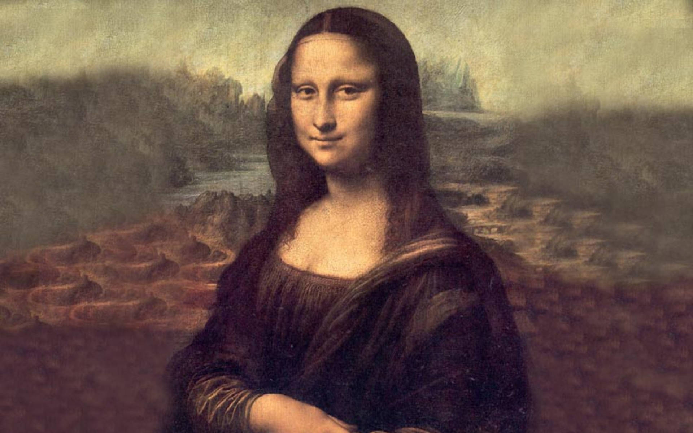
Mona Lisa
Leonardo da Vinci
The enigmatic smile of Mona Lisa has captivated viewers for centuries, embodying the essence of Renaissance portraiture.
-
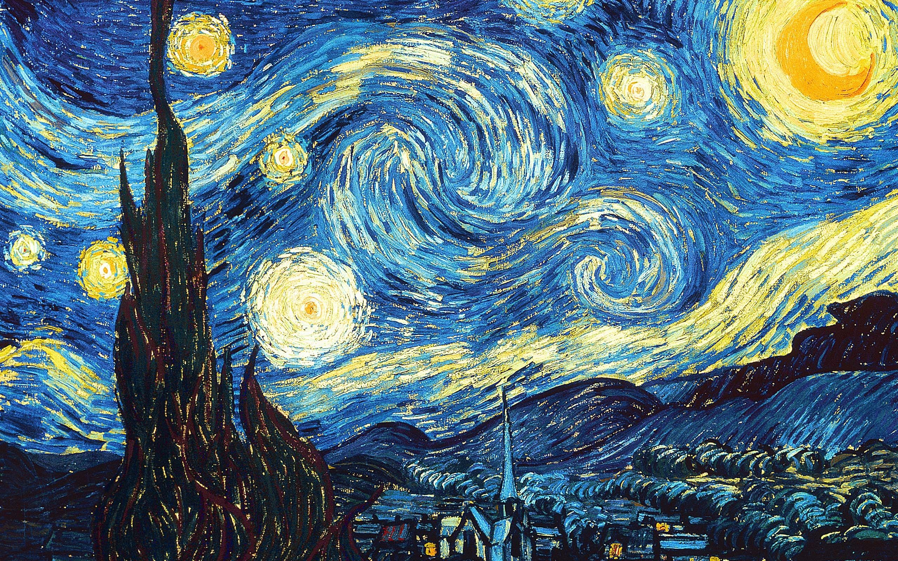
Starry Night
Vincent van Gogh
A swirling night sky over a quiet town, this masterpiece reveals Van Gogh’s emotional turmoil and awe for nature.
-

The Persistence of Memory
Salvador Dalí
Dalí’s surreal melting clocks challenge our perception of time and reality in a dreamlike landscape.
-
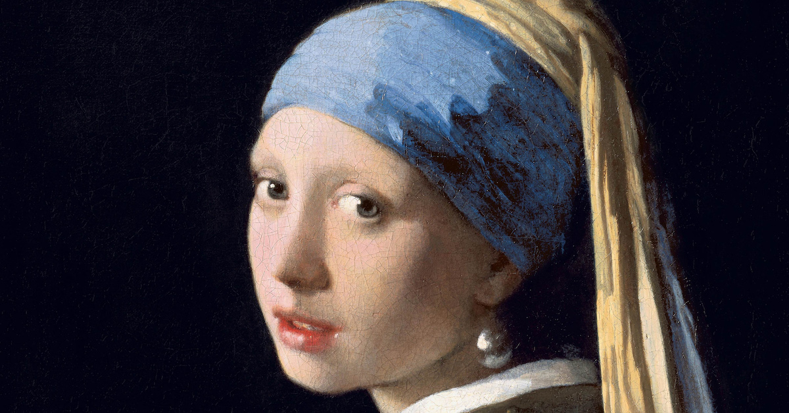
Girl with a Pearl Earring
Johannes Vermeer
Known as the “Mona Lisa of the North,” this portrait exudes mystery and delicate beauty through light and gaze.
-
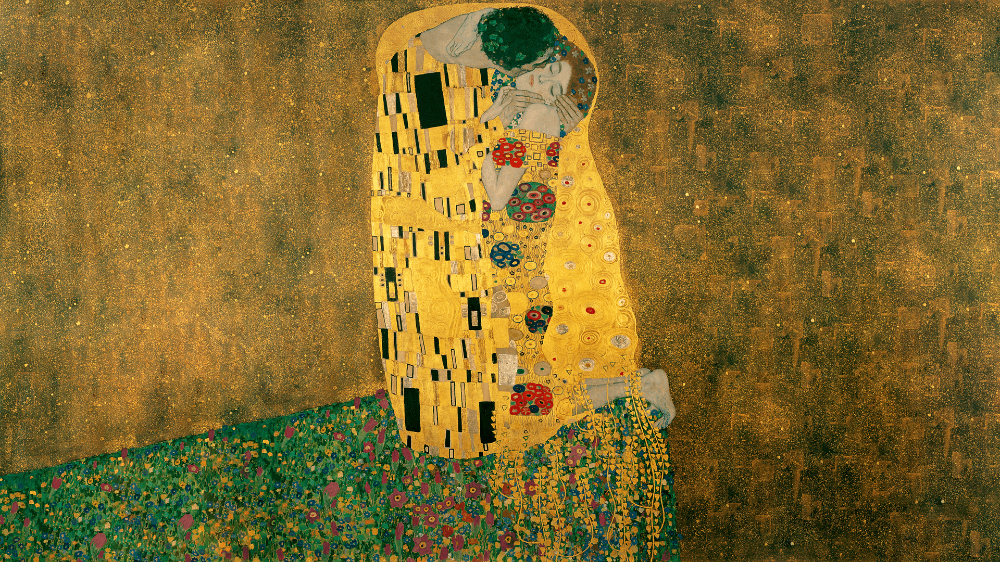
The Kiss
Gustav Klimt
An ornate celebration of love and intimacy, Klimt’s gilded masterpiece is a symbol of passion and unity.
-
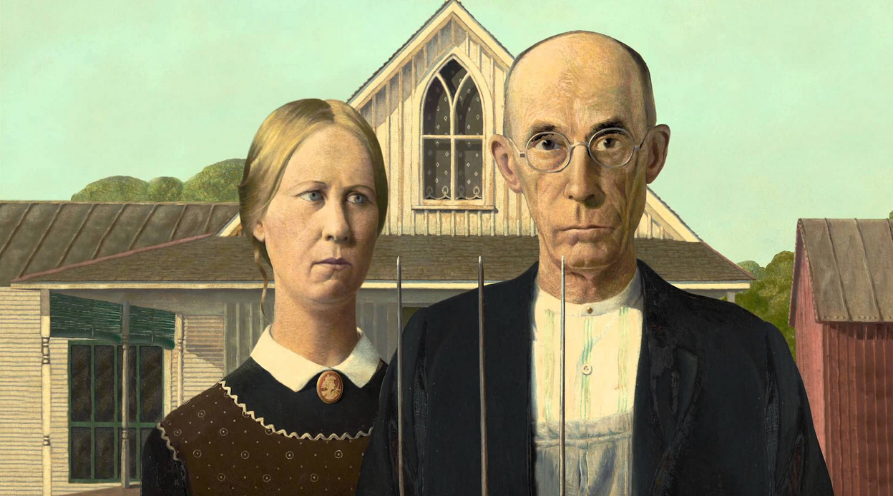
American Gothic
Grant Wood
This iconic portrayal of Midwestern resilience captures the spirit and stoicism of rural America.
-
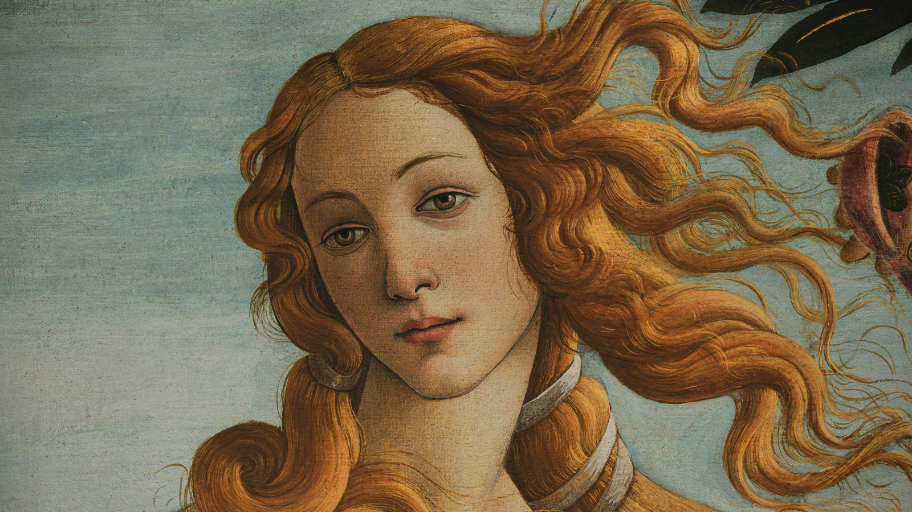
The Birth of Venus
Sandro Botticelli
A symbol of divine beauty and love, this mythological scene heralds the arrival of Venus from the sea.
-
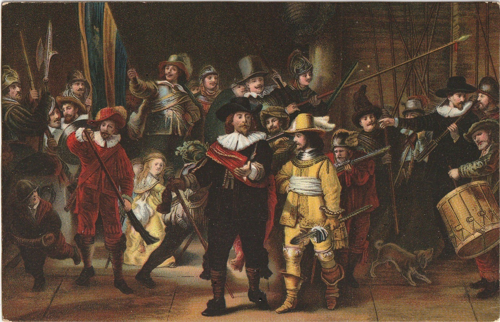
The Night Watch
Rembrandt
A dynamic group portrait famed for its dramatic lighting and lively depiction of Amsterdam’s militia.
-
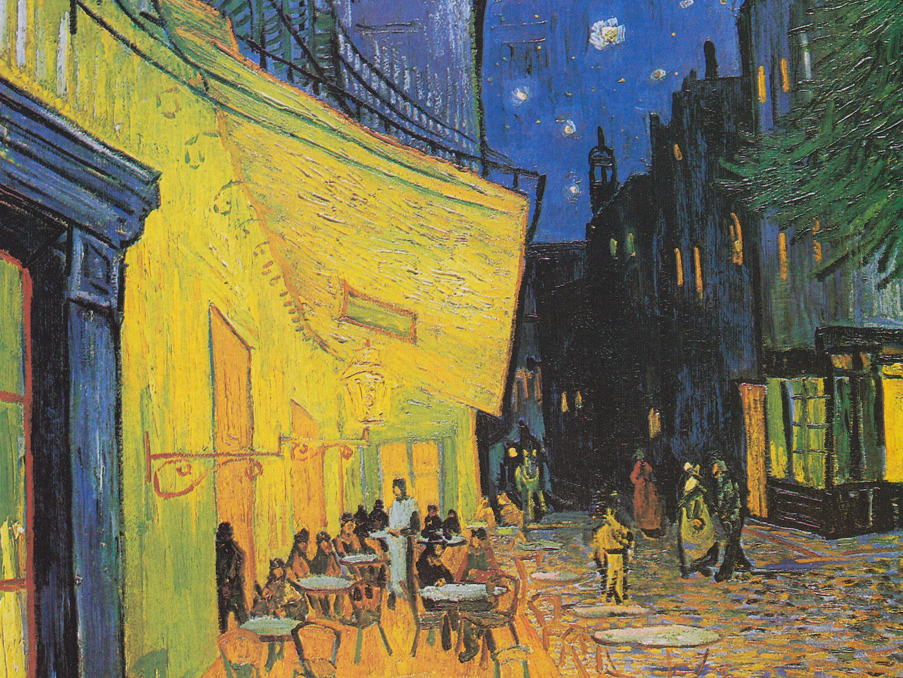
Cafe Terrace at Night
Vincent van Gogh
Van Gogh’s vibrant night scene invites viewers into a cozy café glowing warmly under a starry sky.
-
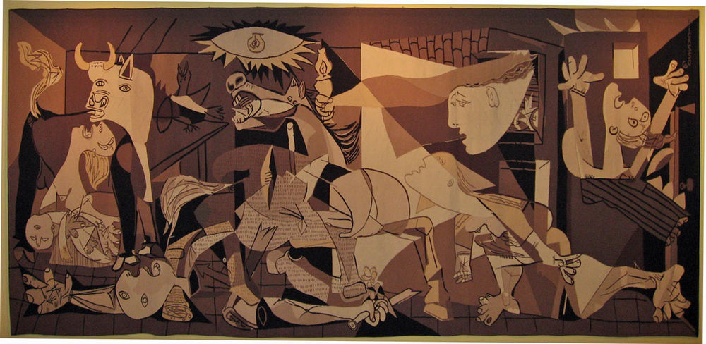
Guernica
Pablo Picasso
A powerful anti-war statement, Picasso’s mural portrays the anguish and chaos of the Spanish Civil War.
-
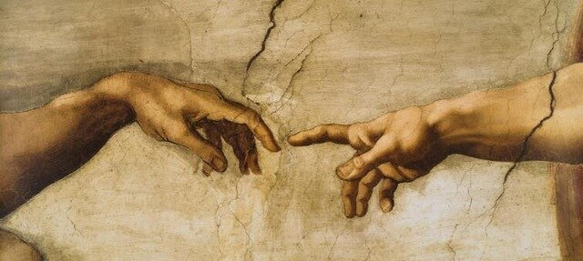
The Creation of Adam
Michelangelo
Part of the Sistine Chapel ceiling, this iconic fresco captures the moment of divine spark between God and man.
-
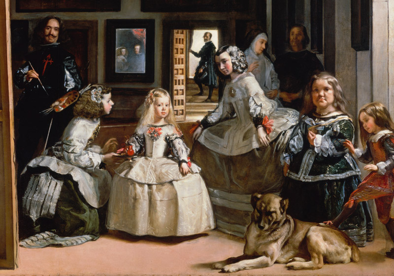
Las Meninas
Diego Velázquez
A complex and enigmatic composition, Velázquez's painting is a meditation on perception and the role of the artist.
-
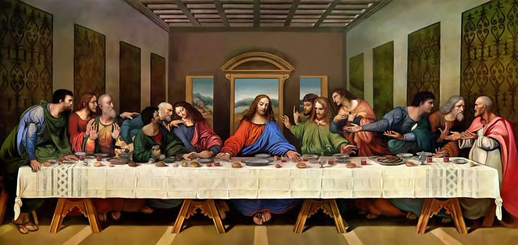
The Last Supper
Leonardo da Vinci
A masterful portrayal of tension and emotion during a pivotal biblical moment—Jesus' final meal with his disciples.
-
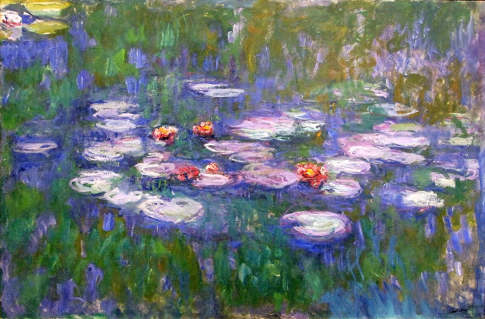
Water Lilies
Claude Monet
This serene series captures the changing light and reflections of a lily pond, exemplifying Impressionist beauty.
-

The Great Wave off Kanagawa
Hokusai
A breathtaking woodblock print that blends natural power with elegant composition, iconic in Japanese art.
-
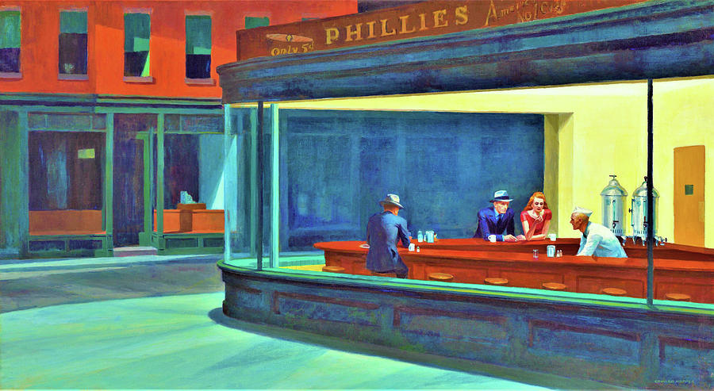
Nighthawks
Edward Hopper
A quiet yet haunting depiction of urban isolation, set in a glowing diner at night.
-

The Hay Wain
John Constable
A quintessentially English landscape celebrating rural life and nature’s peaceful beauty.
-

Whistler’s Mother
James McNeill Whistler
A stoic and tender portrayal of maternal dignity, this piece is a study in composition and tone.
-

Impression, Sunrise
Claude Monet
This painting gave Impressionism its name, capturing fleeting light over the port of Le Havre.
-

The Garden of Earthly Delights
Hieronymus Bosch
A fantastical triptych exploring temptation, paradise, and damnation through surreal and symbolic imagery.